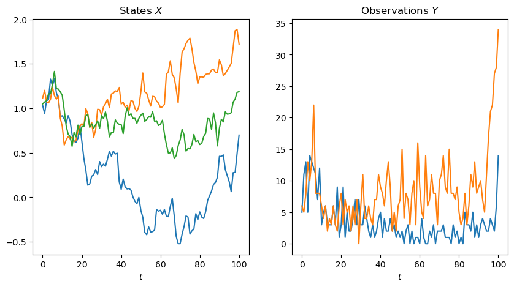
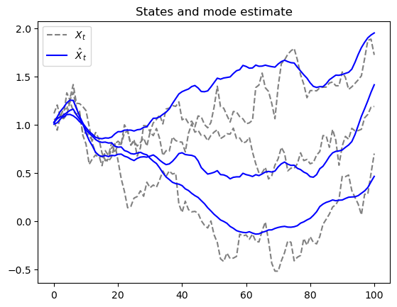

Code
import fastcore.test as fct
from isssm.glssm import simulate_glssm
from isssm.glssm_models import lcm
import jax.random as jrn
from isssm.kalman import kalmanConsider an LCSSM with states \(X\) and observations \(Y\). If the joint distribution of \(X\) and \(Y\) is not gaussian, we are unable to perform the standard Kalman filter and smoother.
Here we implement the alternative mode estimation method from (Durbin and Koopman 2012), Chapter 10.6. It’s main idea is to approximate the posterior distribution by a gaussian distribution by a second-order Taylor expansion for the log-pdf.
This essentially means matching the first and second order derivatives of the observation log-likelihoods at the mode. As the mode is a (global) maximum of the posterior distribution, we can find it by a Newton-Raphson iteration for which (Durbin and Koopman 2012) show, that it can be implemented efficiently by a single pass of a Kalman smoother.
The mode estimation procedure is based on the observation that at the mode \(\hat s = (\hat s_0, \dots, \hat s_n)\) the surrogate gaussian model with the same state equation and observation equations
\[ \begin{align*} S_t &= B_t X_t \\ Z_t &= S_t + \eta_t \\ \eta_t &\sim \mathcal N\left(0, \Omega_t\right) \end{align*} \] for \(\Omega_t^{-1} = -\frac{\partial^2 \log p(y_t|\cdot)}{\partial (s_t)^2}|_{\hat s_t}\) has, for \(z_t = s_t +\Omega_t {\partial p(y_t|\cdot)}{\partial s_t}|_{\hat s_t}\) mode \(\hat s\).
In most cases we are interested in, the observations are conditionally independent given the signals such that \(\Omega\) is a diagonal matrix, which makes inversion much faster as we only have to invert the diagonals. This implementation assumes this to hold, but could be extended to handel the general case as well (replace the calls to vdiag by solve).
This is used in a fixed point iteration:
Implement this with disturbance smoother (more efficient)
mode_estimation (y:jaxtyping.Float[Array,'n+1p'], x0:jaxtyping.Float[Array,'m'], A:jaxtyping.Float[Array,'nmm'], Sigma:jaxtyping.Float[Array,'n+1mm'], B:jaxtyping.Float[Array,'n+1pm'], dist, xi:jaxtyping.Float[Array,'n+1p'], s_init:jaxtyping.Float[Array,'n+1p'], n_iter:int, log_lik=None, d_log_lik=None, dd_log_lik=None, eps:jaxtyping.Float=1e-05)
| Type | Default | Details | |
|---|---|---|---|
| y | Float[Array, ‘n+1 p’] | observation | |
| x0 | Float[Array, ‘m’] | initial state mean | |
| A | Float[Array, ‘n m m’] | state transition matrices | |
| Sigma | Float[Array, ‘n+1 m m’] | state covariance matrices | |
| B | Float[Array, ‘n+1 p m’] | observation matrices | |
| dist | distribution of observations | ||
| xi | Float[Array, ‘n+1 p’] | observation parameters | |
| s_init | Float[Array, ‘n+1 p’] | initial signal | |
| n_iter | int | number of iterations | |
| log_lik | NoneType | None | log likelihood function |
| d_log_lik | NoneType | None | derivative of log likelihood function |
| dd_log_lik | NoneType | None | second derivative of log likelihood function |
| eps | Float | 1e-05 | precision of iterations |
| Returns | tuple |
We return to the Negative Binomial common factor model and use mode estimation to obtain an estimate for the mode of the conditional distribution of states given the observations.
m, p, n = 3, 2, 100
A = jnp.broadcast_to(jnp.eye(m), (n, m, m))
B = jnp.broadcast_to(jnp.array([[1, 0, 1], [0, 1, 1]]), (n + 1, p, m))
s2= 0.01
Sigma = jnp.broadcast_to(s2 * jnp.eye(m), (n + 1, m, m))
x0 = jnp.ones(m)
key = jrn.PRNGKey(512)
key, subkey = jrn.split(key)
*_, dist, xi = nb_lcssm(x0, A, Sigma, B, 20.)
N = 1
(X, ), (Y,) = simulate_lcssm(x0, A, Sigma, B, dist, xi, N, subkey)
fig, (ax1, ax2) = plt.subplots(1, 2, figsize=(10, 5))
ax1.plot(X)
ax1.set_xlabel("$t$")
ax1.set_title("States $X$")
ax2.plot(Y)
ax2.set_xlabel("$t$")
ax2.set_title("Observations $Y$")
plt.show()/opt/homebrew/Caskroom/miniconda/base/envs/research/lib/python3.10/site-packages/tensorflow_probability/python/internal/backend/jax/random_generators.py:127: UserWarning: Explicitly requested dtype <class 'jax.numpy.float64'> is not available, and will be truncated to dtype float32. To enable more dtypes, set the jax_enable_x64 configuration option or the JAX_ENABLE_X64 shell environment variable. See https://github.com/google/jax#current-gotchas for more.
samps = jaxrand.gamma(
s_init = jnp.log(Y + 1.)
x_smooth, z, Omega = mode_estimation(Y, x0, A, Sigma, B, dist, xi, s_init, 10)
plt.title("States and mode estimate")
plt.plot(X, linestyle='--', color="gray", label="$X_t$")
plt.plot(x_smooth, color="blue", label="$\\hat X_t$")
# unique legend
handles, labels = plt.gca().get_legend_handles_labels()
by_label = dict(zip(labels, handles))
plt.legend(by_label.values(), by_label.keys())
plt.show()
The default implementation of the mode_estimation method uses automatic differentiation to evaluate the first and second derivatives necessary to implement mode estimation. You can also provide the derivatives yourself, e.g. for efficiency or numerical stability.
r = 20.
def nb_log_lik(s_ti, r_ti, y_ti):
return jnp.sum(y_ti * jnp.log(expit(s_ti - jnp.log(r_ti))) - r_ti * jnp.log(jnp.exp(s_ti) + r_ti))
def d_nb_log_lik(s_ti, r_ti, y_ti):
return y_ti - (y_ti + r_ti) * expit(s_ti - jnp.log(r_ti))
def dd_nb_log_lik(s_ti, r_ti, y_ti):
return -(y_ti + r_ti) * expit(s_ti - jnp.log(r_ti)) * (1 - expit(s_ti - jnp.log(r_ti)))
print("10 iterations of mode estimation with AD ")
print("10 iterations of mode estimation without AD")10 iterations of mode estimation with AD
1.06 s ± 4.97 ms per loop (mean ± std. dev. of 7 runs, 1 loop each)
10 iterations of mode estimation without AD
684 ms ± 2 ms per loop (mean ± std. dev. of 7 runs, 1 loop each)